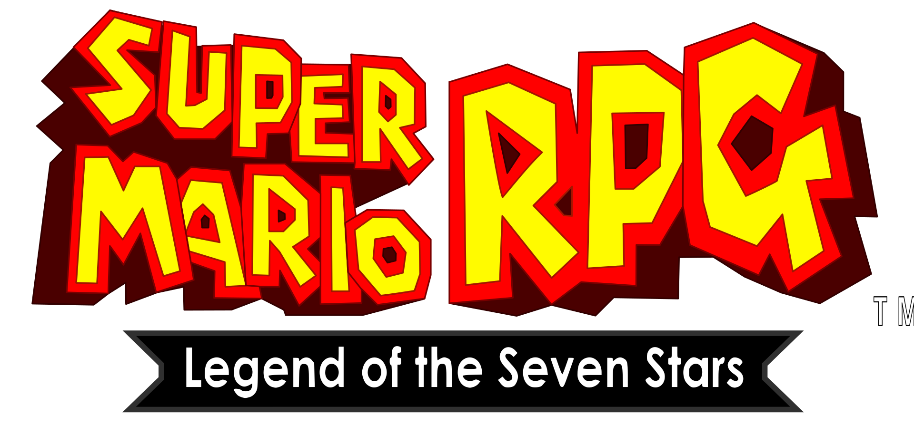

por Square (atual Square Enix), juntamente com a Nintendo

E novamente, a história se desenrola com o habitual rapto da princesa Peach, pelas garras do terrível Rei Bowser.
E mais uma vez, nosso caro bigodudo e encanador Mario parte em uma aventura em direção ao castelo para resgatar a princesa. Mas algo diferente ocorre: após deter Bowser, uma espada gigante chamada Exor cai do céu, destruindo a Estrada Estelar, dividindo-a em 7 pedaços e aterrissa em cima do castelo, arremessando para longe todos aqueles que estavam presentes lá. Mario cai de forma segura dentro de sua própria casa, enquanto a localização da princesa e de Bowser ainda é um mistério. Ao tentar retornar ao castelo, Mario se depara com Exor, que derruba a ponte que levava até o castelo e declara que esse é apenas o seu primeiro passo para dominar aquele mundo. Então Mario, decidido a acabar com os planos maléficos de Exor, parte em uma jornada em busca de impedir os terríveis planos de Exor e encontrar a princesa.